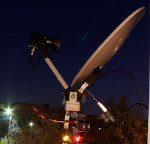
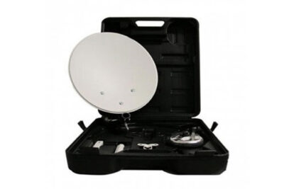
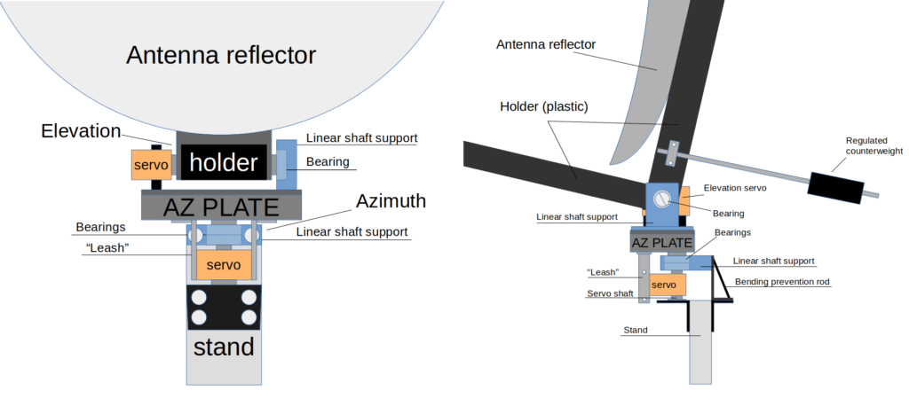

A few years ago, I had a nice 3m satellite dish with a hydrogen line receiver. Now I have only a small balcony with limited antennas placement ability. I decided to build a custom 40 cm dish with a servo-based rotator. Sure, it’s impossible to receive weak signals and do some radio astronomy, but it should be perfect for the satellites tracking and reception. This is a complete description of the mechanics, electronics, and software. Warning: a lot of pictures below.
Antenna
As the heart of this construction, I decided to use a small 40cm dish. Originally this antenna was designed for camping usage. I found this dish in a local sat tv store.
Overall construction is good. The dish is rock solid and lightweight. A lot of elements are made of plastic. Everything is modular to be portable. This gives the ability for antenna customization.
Rotator
Unfortunately, I don’t have access to fancy tools like a turning or drilling lathe. Everything I got is many mechanical parts from a local hardware store, digital servos, and an enormous willingness to build the antenna rotator.
Luckily my antenna has a plastic support structure. The plastic is perfect and strong. I decided to attach an elevation servo to this plastic structure.
I tried different approaches, experimenting and finally came up with this design:
Click on the image to get the full resolution.
{kind=link}
Primary construction materials are linear shaft supports from a 3D printer, aluminum profile, bearings, aluminum plates, and mount brackets from networking equipment.
The counterweight is sitting on a stud. This gives the ability for tuning. Proper balance helps the Elevation servo to start moving from the extreme positions.
All the antenna weight is resting on the Azimuthal shaft support and built-in bearings. The bottom servo also helps to support this construction.
Also, you can see there an additional rod that helps to prevent the construction bending. Finally, all the weight is pushed to the massive aluminum profile stand.
The elevation servo motor hub is placed on the antenna plastic holder at the lower point. The hub is held with two screws and additionally secured with glue. This helps to avoid backslashes.
You can see a bearing from the opposite side of the plastic construction. This bearing is placed in the linear shaft support and helps to support the antenna.
{kind=link}
The whole construction can be easily assembled and disassembled. The bearing mounting hole is big enough to put a screwdriver in this hole for the servo securing.
Finally, the shaft support is mounted, and the whole construction is placed on the top of a metal box (AZ PLATE). The Elevation servo motor is secured with a little bit of metalwork. Everything is stiff enough.
I used the metal box there since it’s handy, robust, and quickly disconnecting the whole antenna from the Azimuthal drive and the whole stand.
{kind=link}
For the Azimuthal drive, I used mounting brackets from networking equipment. The brackets were reworked a little bit. The servo hub is secured in the same manner as the Elevation one.
{kind=link}
I had to rework the servo motor. Added a top bearing that helps to secure the motor in the shaft support.
{kind=link}
The box AZ PLATE is sitting on the top of the shaft support. I used there a separate bearing and shaft. Simple metal “leash” is used for a rotation transmission from the azimuthal servo to the top box.
The antenna stand is a massive aluminum profile crewed to a metal plate. This plate is also used as a platform for all control electronics and power supply circuits. All the electronics will be described below.
{kind=link}
Electronics
Selected motors are digital servos with a serial half-duplex UART interface and a custom protocol. The servos support the daisy chain. It’s pretty convenient.
I’m using K-power RD14T servo motors. It’s appeared that those motors are just clones of the Dynamixel AX servos. At least, K-power used the Dynamixel protocol without permission. I didn’t know that, and it’s too late to change the mechanics. K-power servos work fine, and I implemented software using the Dynamixel protocol, so my code should be suitable for the original servo motors.
All the control electronics and power lines are placed on a separate board. The heart is Raspberry Pi 3 with control software. Everything is set at the antenna metal mounting plate.
Also, I decided to place there a high-quality PLL box with an external precision reference clock. I intend to use this PLL for the antenna LNB, but currently, it is not used.
{kind=link}
Half-duplex UART interface requires to use of some bus arbiter. I decided to build a simple USB to half-duplex UART adapter.
The USB is a convenient interface. It’s easy to develop and debug motor software. The rotator can be connected to any modern computer.
I’m using well-known FT232RL and a pair of 74HC1G126 & 74HC1G125 buffers.
{kind=link}
Data buffers should be powered from a 3.3 volts source. Also, there is a pull-up resistor on the data line.
It’s important since Servo’s internal logic is also 3.3 volts and I’m not sure about its tolerance to 5 volts.
Power regulators are mounted on the board. There is an additional thermal interface under the LM2576 boards (Blue little boards).
{kind=link}
Everything is installed:

Free space on the board was reserved for the GPS receiver. But then I decided to use another module. I will fully describe the PLL and Clock Ref in a future article. Currently, I’m writing control software.
Software
Rotator software is split into two parts. There is a Hamlib server running on the Raspberry Pi. And GUI tool Gpredict on the PC. I wrote a custom Hamlib rotator driver, implementing the Dynamixel protocol.
{kind=link}
I forked the Hamlib repository and added my driver. Everything is this single commit. As you can see, everything is quite simple. The driver implements basic operations of setting and getting AZ-ALT position. Also, there is some initial configuration of the servo motors, like rotation speed.
Also, you can see here coordinates correction coefficients. These coefficients are required when rotators’ physical zero-point didn’t match the geographical South. I will describe the calibration process below.
For debugging purposes, I wrote an additional program – ax-12 servo util. This program can be easily compiled on Raspberry Pi or any desktop Linux system or macOS.
It’s possible to change the Servo bus ID or get the current position (actual position of the servo shaft) and so on. Changing the servo ID is critical since the default value is “1” for each motor. Dynamixel protocol requires different IDs. Some examples:
$ git clone https://github.com/olegkutkov/AX-12-servo-test-util.git $ cd AX-12-servo-test-util $ make $ ./servo -b 9600 -p /dev/ttyUSB0 -s Open /dev/ttyUSB0 and set baud rate = 9600 Found device with ID = 1 Found device with ID = 2 $ ./servo -b 9600 -p /dev/ttyUSB0 -i 1 --get Open /dev/ttyUSB0 and set baud rate = 9600 Servo ID 1 current position 131.557007 (DEC: 449)
Using this tool, it’s possible to set up the antenna at a given location and get the positioning offsets. This can be done by manually pointing the antenna to some known satellite.
In my case, it’s physically impossible to mount the antenna correctly, directing to the South. That’s why I get and applied Azimuth offset. The Elevation is also required calibration.
{kind=link}
- Manually point the antenna to some known satellite and get the maximum signal.
- Get the current Servos positions using AX-12-servo-test-util
- Compare to the actual coordinates of the satellite.
- Calculate the offset values.
- Manually put the antenna to all extremal positions and get the rotation limits for both axes.
After getting and applying all calibration values, it’s time to compile Hamlib and run the rotator daemon (rotctld).
$ git clone https://github.com/olegkutkov/Hamlib.git $ cd Hamlib $ ./configure $ make
$ ./tests/rotctld -l ...... 2001 SAR SAR-1 20201026.0 Untested ROT_MODEL_SAR
The driver is available. Rotator ID is 2001.
Now we can run the daemon using the selected driver and requesting a lot of debug info.
$ ./tests/rotctld -m 2001 -r /dev/ttyUSB0 -s 9600 -vvvv -Z 2021-02-10:01:38:24.190769: rotctld, Hamlib 4.1~git 2021-02-10:01:38:24.191013: Report bugs to <hamlib-developer@lists.sourceforge.net> 2021-02-10:01:38:24.191209: rot_init called 2021-02-10:01:38:24.191464: initrots4_sar: _init called 2021-02-10:01:38:24.191606: rot_register (2001) 2021-02-10:01:38:24.191760: rot_open called 2021-02-10:01:38:24.191889: serial_open called 2021-02-10:01:38:24.193525: serial_setup called 2021-02-10:01:38:24.194275: serial_flush called 2021-02-10:01:38:24.194390: serial_flush: tcflush 2021-02-10:01:38:24.244593: Probing motor with ID=2 2021-02-10:01:38:24.244721: write_block called 2021-02-10:01:38:24.244880: read_block called 2021-02-10:01:38:24.267710: Probing motor with ID=1 2021-02-10:01:38:24.267844: write_block called 2021-02-10:01:38:24.268001: read_block called 2021-02-10:01:38:24.284069: write_block called 2021-02-10:01:38:24.284238: write_block called Opened rot model 2001, 'SAR-1' 2021-02-10:01:38:24.284510: Backend version: 20201026.0, Status: Untested
Probing motor with ID=x Means that both servos are detected properly.It’s time to configure and connect theGpredict.
Go to Edit/Preferences, select Interfaces/Rotators tab, and add your rotator. Set the rotator name, IP address of the rotctld server (Raspberry Pi), Az type, and limits.
The software will not try to point the antenna beyond selected limits.
{kind=link}
Now it’s possible to launch the Antenna control module. Choose the rotator (SAR-1, in my case), engage it.
{kind=link}
Antenna control provides three options:
- Monitor – just read the current antenna position, without any control. I recommend using this option during the first start. This helps to avoid unpredicted antenna movements.
- Manual control. Select coordinates at the top part of the window. The rotator will follow these coordinates.
- Target tracking. It’s possible to select the satellite or any other known (for Gpredict) object and point the antenna. Live following is also working.
rotctld console:2021-02-10:01:46:46.640415: rot_get_position: got az=150.35, el=26.04 2021-02-10:01:46:47.341205: rot_set_position called az=134.00 el=22.00 2021-02-10:01:46:47.341291: rot_set_position: south_zero=0
The first tests of the rotator. Pointing to the geostationary satellites:
And tracking fast-flying targets:
Sure, all these are indoor tests. Are there any outdoor tests? Sure, I tested it with geostationary satellites, and everything is working fine.
As an LNB, I’m using my reworked circular LNB.
Also, there are some interesting results with Starlink satellites. But I’m not sure, new experiments are required.
The weather is currently awful (rain, snow, strong wind, and freezing!). Antenna experiments are on hold, and I’m preparing new hardware and software. Stay tuned!
{kind=link}
Thanks for reading!
A very interesting solution! How accurate are these servos for positioning?
I solved the issue with mechanics in this way.
This is for small loads.
https://ibb.co/zQYs81B
This is for heavier, horizontal mechanisms will have a common axis.
https://ibb.co/42J82Vn
Found a horizontal mechanism with a full main gear, therefore it works 360 degrees. This is not easy, almost all models are produced with a half wheel, with the ability to rotate 180 degrees. Such models can be placed on horizontal rotation.